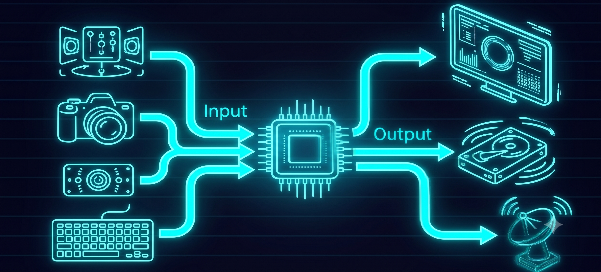

La Unidad de Entradas y Salidas (E/S) es el subsistema encargado de gestionar, adaptar y sincronizar la transferencia de información bidireccional entre el núcleo de procesamiento (UCP y Memoria) y los dispositivos periféricos.
En el modelo de Von Neumann, este módulo es crucial porque actúa como interfaz traductora: convierte las señales del mundo exterior al formato binario que la máquina comprende, y viceversa, garantizando un flujo de datos eficiente para su ejecución o almacenamiento.
▶ Ver video en YouTube